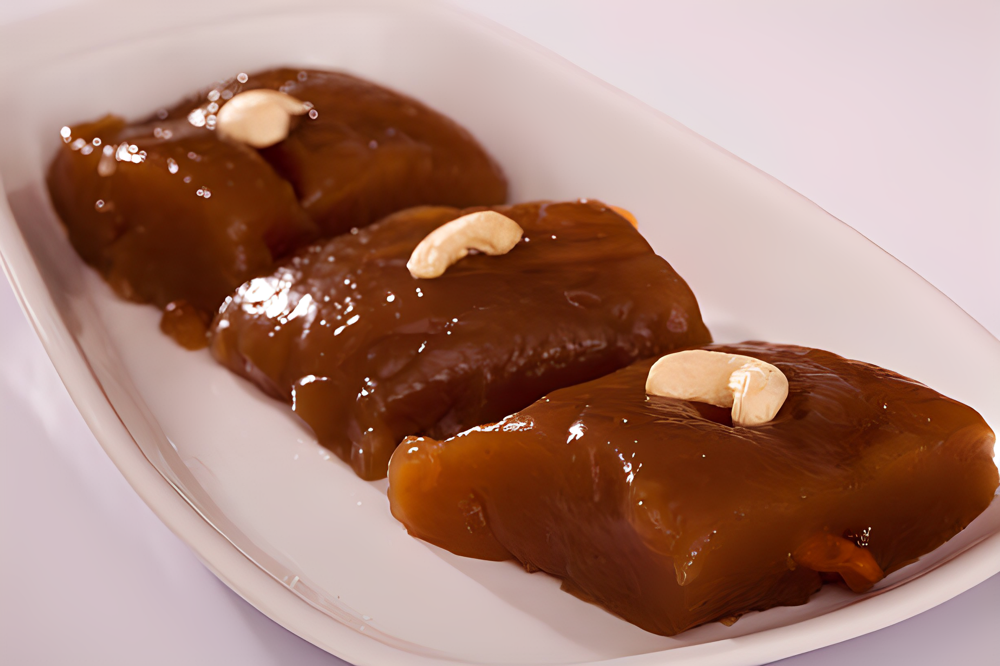

Tirunelveli halwa is a classic South Indian sweet that's absolutely delicious
Ingredients
1 cup wheat flour
1.5 cups sugar
1 cup ghee (clarified butter)
4 cups water
A pinch of cardamom powder
A handful of cashews and raisins for garnish

Instructions
1.Roast the Wheat Flour
Heat a pan on low flame and add the wheat flour
Roast the flour continuously, stirring to ensure even roasting. Roast until it turns aromatic and
golden brown. Be careful not to burn it.
2.Prepare Sugar Syrup
In a separate pan, add sugar and water.
Stir continuously until the sugar dissolves, creating a syrup. Boil until it reaches a one-string
consistency. You can check this by taking a drop of syrup between your fingers—there should be a
single thread formed.
3.Combine Roasted Flour and Sugar Syrup
Slowly add the roasted wheat flour to the sugar syrup, stirring continuously to avoid lumps.
4.Add Ghee
Gradually add ghee to the mixture, stirring continuously. Keep adding ghee until the mixture starts
to leave the sides of the pan.
5.Flavor with Cardamom
Add a pinch of cardamom powder for flavor and continue to stir.
6.Garnish
In a separate small pan, heat a bit of ghee and fry cashews and raisins until they are golden brown.
Add them to the halwa mixture.
7.Final Cooking
Keep stirring the halwa mixture until it reaches a consistency where it starts leaving the edges of
the pan.
8.Serve
Once the halwa reaches the desired consistency, remove it from heat and let it cool for a few
minutes.
Now, your Tirunelveli halwa is ready to be served! Enjoy the sweet indulgence😋.